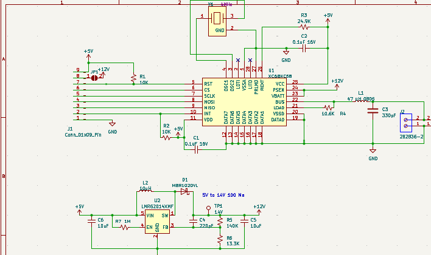
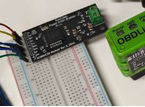

Class 2 Network Communication PDB
J1850VPW Module based on the Motorola XC68HC58 datalink IC — designed for GM class 2 serial network communication.
Project Overview
This module is designed to transmit and receive data on the GM class 2 serial network. It uses the older Motorola XC68HC58 datalink IC, providing reliable communication on the J1850VPW bus.
Purpose
The Class 2 Network Communication PDB enables interfacing with GM vehicles' class 2 serial networks for diagnostics, data logging, and telemetry applications. It provides a cost-effective solution for accessing vehicle data networks.
Revision C Updates
Rev C is the current version, featuring silkscreen corrections for improved clarity. Key features include:
- JP1 Jumper Enables 14V output from the module when jumped. Note that the boost converter can only support about 100mA.
- Boost Converter Useful as a telemetry tool to measure at your microcontroller and confirm the boost is working, or to power an indicator.
- Mode Pins Mode 0 and Mode 1 should be left disconnected — they won't connect with this module.
Design Files
KiCad footprint and symbol are available (same as the GMLAN module project). Leave Mode 0 and Mode 1 disconnected as they are not compatible with this module.
Schematic & PCB Design
Rev C board with silkscreen corrections



Key Features
J1850VPW Protocol
Supports GM class 2 serial network communication using the Variable Pulse Width modulation protocol.
14V Boost Output
Selectable 14V output via JP1 jumper, with 100mA max current for telemetry and indicator applications.
KiCad Compatible
Includes footprint and symbol files compatible with KiCad, making it easy to integrate into your designs.
Open Source
Full source code and design files available on GitHub for modification and customization.
Project Resources
💡 Recommendation: Review the XC68HC58 datasheet before getting started with this module.